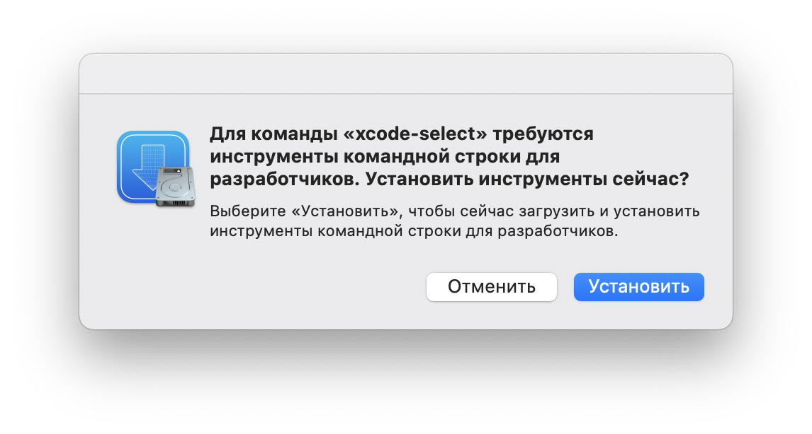
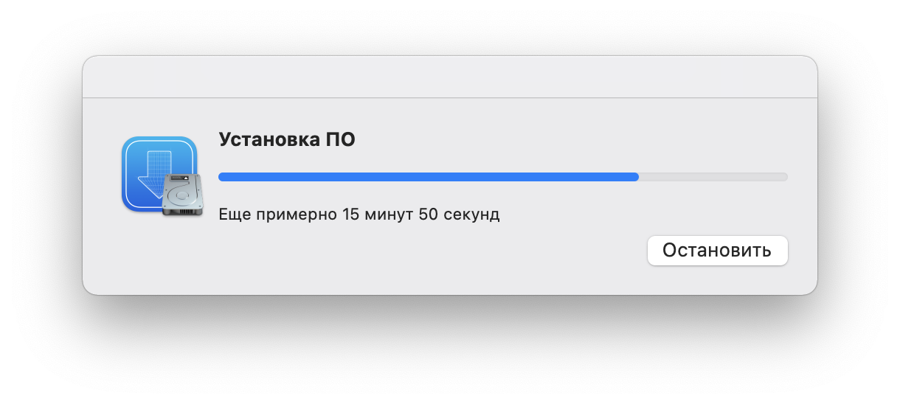
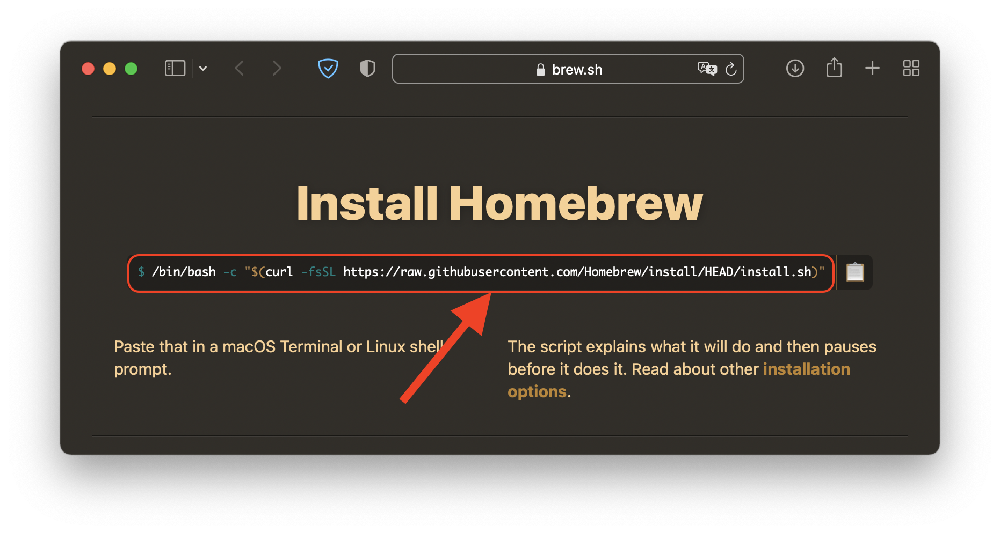
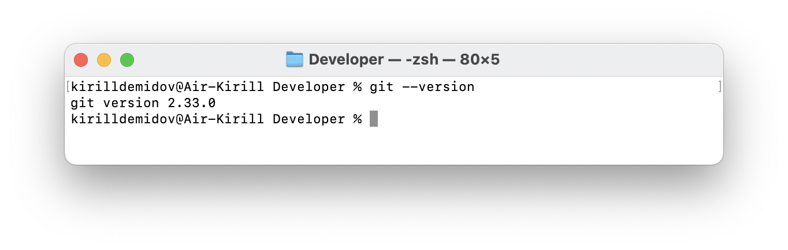

Настройка минимально необходимых инструментов#
Visual Studio Code#
Visual Studio Code - бесплатный, расширяемый редактор кода от Microsoft.
Скачай и установи его. Теперь это твой основной рабочий инструмент.
Горячие клавиши VSCode#
Редактор кода - инструмент. Он помогает нам, разработчикам, писать код, в том числе писать код быстрее. Для этого существуют клавиатурные сокрашения - избавляют от траты времени на поиск мыши, поиск нужного пункта меню в настройках и клика по нему.
Попробуй найти в настроках пункт Open. Или нажми ⌘O(Mac) / Ctrl+O(Win). Что быстрее?
С клавиатуры быстрее управлять перемещением курсора по коду. Менять местами строки кода, вырезать и вставлять код, форматировать его и т.д.
К использованию клавиатурных сокращений нужно привыкнуть. Заставить себя их изучать и использовать!
Список клавиатурных сокращений с официального сайта:
Трать на изучение хотя бы по 15-20 минут в день. Начни с разделов:
- Basic editing
- Multi-cursor and selection
- File management
Расширения VSCode#
Плагины расширяют базовые возможности VSCode. Ниже короткий список полезных плагинов, которые стоит установить сразу. Нажми ⇧⌘X(Mac) / Ctrl+Shift+X(Win) - в открывшейся панели расширений найди и установи:
-
EditorConfig for VS Code by
EditorConfig- плагин научит редактор понимать файл.editorconfig. Зачем нужен файл.editorconfig- см. Синтаксис HTML, пункт 3 в Code Guide -
Auto Rename Tag by
Jun Han- при замене имени открывающего тега, автоматически изменится имя тега в закрывающей части. Это удобно. -
Live Server by
Ritwick Dey- простой локальный сервер. Запуск - клик правой кнопкой мыши на файле HTML и выбор пунктаopen with live server. Подробнее смотри в описании к плагину. -
htmltagwrap by
Brad Gashler- быстрое оборачивание выделенного куска текса тегом. Смотри как работает в описании к плагину.
Sublime Text#
Sublime Text - более простой из коробки, но от этого не менее прекрасный редактор кода. Подойдет как дополнительный инструмент для открытия отдельных файлов в том числе прямо из консоли (актуально юзерам MacOS).
Скачай и установи его. Он еще пригодится.
Пользователям macOS#
Позже, настраивая локальный сервер, тебе будет удобно открывать файлы прямо из терминала. Добавим возможность открывать файлы из терминала в Sublime Text.
- Проверь возможность открытия Sublime Text из терминала:
open /Applications/Sublime\ Text.app/Contents/SharedSupport/bin/subl # должно открыться окно Sublime Text. - В точности повтори команду ниже:
sudo ln -s /Applications/Sublime\ Text.app/Contents/SharedSupport/bin/subl /usr/local/bin/subl - Проверь, что теперь ты можешь открыть любую папку или файл в Sublime Text через терминал командой
subl, например папку рабочего стола:subl ~/Desktop/
Git#
Git - система контроля версий.
Процессы установки на Windows и Mac отличаются - выбери подходящий для тебя ниже.
Установка Git на Windows#
- Скачай Git c официального сайта и установи его.
- Во время установи соглашайся с настройками по умолчанию.
- После установки найди в меню Пуск программу
Git bash- запусти ее. Это терминал для работы с консольными утилитами. - Введи команду и нажми
enter:git --version # в ответ получишь что-то типа - "git version 2.30.0"
Поздравляю - Git установлен.
Установка Git на Mac#
Инструкция по установке с официального сайта на английском - воспользуйся ей.
Тем не менее, опишу с картинками на русском:
-
Установи
xcode command line tools. Введи в терминале команду и нажмиenter:xcode-select --install -
Согласись с установкой инструментов командной строки: 
-
Дождись полной установки! Изначально время до окончания установки может тебя смутить, но оно будет быстро уменьшаться:) 
-
Установи пакетный менеджер Homebrew. Для этого скопируй с сайта Homebrew команду и выполни ее в терминале: 
-
Теперь установи Git - выполни команду:
brew install git -
Проверь, что Git установился - выполни команду:
Если в ответ получишь номер версии - Git установлен: git --version
Аккаунт на github.com#
Github - веб-сервис работающий на базе системы контроля версий Git.
Для полноценной работы с Git нам нужно зарегистрироваться на Github. Сделай это и запомни почту на которую регистрировал аккаунт на Github.
Настройка Git#
-
В терминале
Git bash для win / встроенный терминал для Macвыполни по очереди две команды:git config --global user.name "Your Name" # где Your Name - твое имя на английскомgit config --global user.email your@email.com # где your@email.com - почта указанная при регистрации аккаунта на github -
Проверь корректность применения настроек. Выполни команду:
git config --list # в ответе получишь список настроек, среди которых должны быть две строки: # user.name=Your Name # user.email=your@email.com
Поздравляю - ты справился с установкой и первоначальной настройкой Git.
node.js#
node.js - как пишет Wikipedia, это платформа, превращающая JavaScript из узкоспециализированного языка в язык общего назначения. С помощью node.js на javaScript можно писать серверную часть web-приложений и даже разработать десктопные программы.
Нам, на курсе начинающих web-разработчиков, node.js нужен для компиляции препроцессорных файлов стилей *.scss в конечный style.css.
Установка node.js#
- Скачай node.js с официального сайта, нажав на большую зеленую кнопку слева - это LTS версия с длительной поддержкой.
- Запусти установочный файл, согласись с условиями лицензии, согласись с предложенными настройками по умолчанию.
- После установки проверь, что все установилось. Выполни в терминале по очереди две команды:
node --version # в ответ получишь версию node.jsnpm --version # в ответ получишь версию npm
npm - пакетный менеджер. Устанавливается с node.js. Он нужен, что бы устанавливать из терминала разные консольные утилиты, для выполнения тех или иных задач, например компиляции scss в css
Поздравляю - node.js и npm установлены.